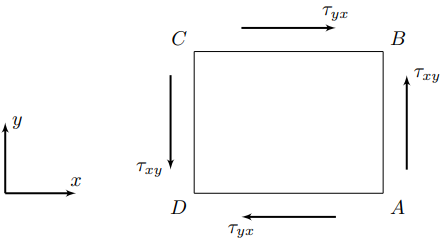
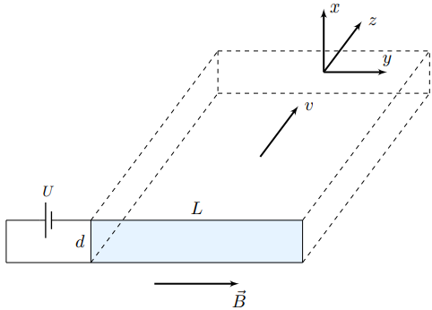
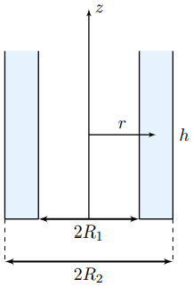
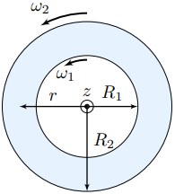
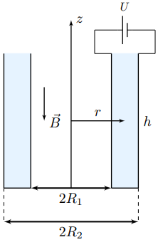

Y24 (2024) — English translation
Взаимодействие электромагнитного поля с немагнитными жидкостями в случае высокой проводимости жидкости хорошо изучено в рамках магнитной гидродинамики (МГД). В данном случае можно пренебречь электрическими эффектами по сравнению с магнитными. Изученные в рамках МГД эффекты давно нашли широкое техническое применение и используются по сей день. Например, МГД устройства применяются в водных судах или для конструкций металлургического перемешивания. Менее изученным является противоположный случай взаимодействия электромагнитного поля с немагнитными жидкостями в случае низкой проводимости жидкости. В этом случае можно пренебречь магнитными эффектами по сравнению с электрическими. Данная область науки получила название электрогидродинамики (ЭГД) и активно развивается около 70 последних лет. Она нашла широкое техническое применение в современном мире. На её основе построены струйный принтеры, а также они используются в ионизаторах, для изготовления тонких полимерных нитей и капилляров. Наиболее интересным для исследований с научной точки зрения является случай промежуточных значений удельной проводимости, когда необходимо учитывать как электрические, так и магнитные эффекты, возникающие при движении жидкости в электромагнитном поле. Данное направление науки называется электромагнитной гидродинамикой (ЭМГД). В рамках данной задачи вам предлагается изучить динамику движения жидкости внутри плоского и цилиндрического конденсаторов, помещённых в однородное магнитное поле.
Точное решение задач ЭМГД является очень сложным. В рамках данной задачи примем следующую модель: Все внешние электромагнитные поля являются стационарными; Все рассматриваемые движения являются стационарными; Собственным магнитным полем, создаваемым токами, текущими в жидкости, можно пренебречь, т.е магнитное поле во всех точках пространства равно внешнему магнитному полю $\vec{B}\bigl(\vec{r}\bigr)$; Внешнее магнитное поле $\vec{B}\bigl(\vec{r}\bigr)$ создано токами, текущими вне жидкости; Во всех точках жидкости объёмная плотность свободного заряда равна нулю.
Точное решение задач ЭМГД является очень сложным. В рамках данной задачи примем следующую модель:
Считайте известными и постоянными все следующие величины: Плотность жидкости $\rho$; Удельная проводимость жидкости $\sigma$; Коэффициент динамической вязкости жидкости $\eta$; Магнитная проницаемость жидкости $\mu\approx 1$.
Считайте известными и постоянными все следующие величины:
Для решения задачи вам понадобится корректная формулировка закона вязкости Ньютона. Рассмотрим грань $AB$ бесконечно малого прямоугольного параллелепипеда жидкости, лежащую в плоскости $yz$ прямоугольной системы координат $xyz$. Касательным напряжением $\tau_{xy}$, действующим на рассматриваемую грань параллелепипеда, называется отношение силы, действующей на данное сечение параллелепипеда в направлении оси $y$, к площади поверхности рассматриваемой грани. Здесь первый индекс обозначает направление нормали к поверхности грани, а второй индекс – направление действия касательного напряжения. Из закона сохранения момента импульса для вещества следует, что касательное напряжение $\tau_{yx}$, действующее на грань $BC$ данного параллелепипеда, лежащую в плоскости $xz$, в направлении оси $x$, равно величине $\tau_{xy}$: $$\tau_{xy}=\tau_{yx}{.} $$ Здесь направления координатных осей $x$ и $y$ определяются направлениями внешних нормалей к граням $AB$ и $BC$ параллелепипеда. При этом соответствующие касательные напряжения, действующие на противоположные грани $CD$ и $AD$ параллелепипеда, должны быть направлены противоположно, поскольку для них направления нормали являются противоположными.

Newton's law of viscosity states that the shear stress $\tau_{xy}=\tau_{yx}$ is proportional to the shear strain rate, which is expressed by the following formula: $$\tau_{xy}=\tau_{yx}=\eta\left(\cfrac{\partial v_x}{\partial y}+\cfrac{\partial v_y}{\partial x}\right){.} $$Здесь частные производные вычисляются в один и тот же момент времени. Данное выражение применимо в любой системе отсчёта при условии, что проекции скорости $v_x$ и $v_y$ и координаты $(x,y)$ are calculated with respect to the chosen reference frame.
The key relationship in EMGD is the connection between the current density $\vec{j}\bigl(\vec{r}\bigr)$ and the values of specific conductivity $\sigma$, electric field strength $\vec{E}\bigl(\vec{r}\bigr)$, magnetic field induction $\vec{B}\bigl(\vec{r}\bigr)$, and fluid velocity $\vec{v}\bigl(\vec{r}\bigr)$. You know Ohm's law in differential form: $$\vec{j}=\sigma\vec{E}{.} $$Этот закон применим только для неподвижных проводников. Если же проводник движется в магнитном поле, то данное уравнение становится неприменимым, а уравнение, описывающее распределение токов в проводнике, требует учёта взаимодействия движущихся в проводнике зарядов с магнитным полем. В общем случае величина плотности тока в проводнике определяется выражением: $$\vec{j}=\sigma\Biggl\langle\cfrac{\vec{F}}{q}\Biggr\rangle{,} $$где $\vec{F}$ – сила, действующая на заряд $q$ со стороны электромагнитного поля. Данная сила должна уравновешиваться силой, действующей на заряд $q$ on the side of the conductor substance. Here, averaging is carried out over all charges participating in the ordered motion. Consider it known that the velocities of charges relative to conductors are extremely small.
Consider a parallel plate capacitor with a distance $d$ between the plates, connected to a constant voltage source $U$. The width of the capacitor plates is $L\gg d$, and their length is also many times greater than the distance $d$ between the plates. Let us introduce the coordinate system $xyz$ as shown in the figure. The $x$ axis is directed perpendicular to the plates, and its origin is located in the middle between the plates. The $y$ axis is directed along the $L$ side of the capacitor plates, and the $z$ axis complements the $xyz$ triple to the right. The system is placed in a uniform magnetic field with induction $\vec{B}=B\vec{e}_y$. In the space between the plates, a conductive liquid with density $\rho$ with conductivity $\sigma$ and dynamic viscosity coefficient $\eta$ flows stationary.

When solving this part of the problem, use the following model: The intensity $\vec{E}$ of the electrostatic field can be considered uniform throughout the entire region between the capacitor plates; The velocity $v$ of the fluid at each point in the space between the plates is directed along the axis $z$; Due to the relation $L\gg d$ the capacitor can be considered infinitely wide; Consider the fluid pressure to be the same at each point in the space between the plates and equal to the pressure at the inlet and outlet of the space between the plates.
To solve this part of the problem, use the following model:
In all other parts of the problem, we consider a capacitor consisting of two very long coaxial cylindrical plates. The radius of the inner lining is $R_1$, and the radius of the outer lining is $R_2$. The height of the cylinders is the same and equal to $h\gg R_1{,}R_2$. The bases of the plates match. The space between the plates is filled with a conductive liquid of density $\rho$ with conductivity $\sigma$ and dynamic viscosity coefficient $\eta$. Let us denote the distance from the cylinder axis to an arbitrary point in the liquid as $r$. We also introduce the axis $z$, directed along the axis of the cylinders.

First, let's consider the movement of a fluid in the absence of an electromagnetic field. Let the inner and outer plates rotate with constant angular velocities, the projections of which on the $z$ axis are $\omega_1$ and $\omega_2$, respectively. In the steady state, the trajectories of fluid elements are circles perpendicular to the $z$ axis, the centers of which are located on the latter.

Now consider the movement of liquid in a capacitor in the presence of an electromagnetic field. The capacitor is connected to a constant voltage source $U$, and the potential of the internal plate is higher than the potential of the external one. The system is placed in a uniform magnetic field with induction $\vec{B}$ directed opposite to the axis $z$ (i.e. $\vec{B}=-\vec{e}_zB$). Both plates of the capacitor are fixed and cannot rotate. When solving the problem, use a cylindrical coordinate system with unit vectors $\vec{e}_r$, $\vec{e}_\varphi$ and $\vec{e}_z$ forming a right-hand triple. In the steady state, the trajectories of fluid elements are circles perpendicular to the $z$ axis, the centers of which are located on the latter. The description of this part of the problem is also a description of parts $\mathrm{E}$ and $\mathrm{F}$.

To begin with, let us consider the case of fluid flow at low speeds $v$, satisfying the strong inequality: $$v\ll \cfrac{E}{B}{.} $$This type of motion is realized in weak magnetic fields.
Let the radii of the plates be again equal to $R_1$ and $R_2$, and the relationship between them can be arbitrary. The induction of the magnetic field in which the capacitor is placed takes on very large values in this part of the problem.
Source: https://pho.rs/p/3794